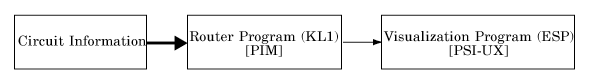

(58) LSI Routing Program
Machine: Multi-PSI, PIM
Environment: PIMOS, SIMPOS
Language: KL1, ESP
Source Code: 0.5 MB
Documents: None
Overview
This tool is used to select routing paths between terminals in LSI
circuits.
Configuration

- Routing Program:
- quickly searches for routing paths based on circuit information.
- Visualization Program:
- displays routing paths in real time.
Function
Circuit information consists of grid size,path through inhibition
area,through hole inhibition points and netlist. First,the
boundary of a path-searching area is decided with a given grid
size. Next,pairs of terminals are given subject to
netlist.
Then,the routing program searches the routing paths whithout pathing
through the inhibition area or bending on through hole inhibition
points. The visualization program displays the state of the routing
operation.
Feature
To realize high parallelism,the routing program has been designed
based on a concurrent objects model. Each line segment on a grid line
corresponds to an object. We implemented these objects as line
processes. Routing paths are decided by communication of line
processes.
- High-speed Routing
-
- Concurrent routing of multiple pairs of terminals.
-
- Parallel searching of routing paths in a pair of terminals.
- Applicability to large-scale data
-
- A process assigned to each processor reduces the number of
communication paths between processors.
FTP
- LSI Routing Program [89K]

www-admin@icot.or.jp